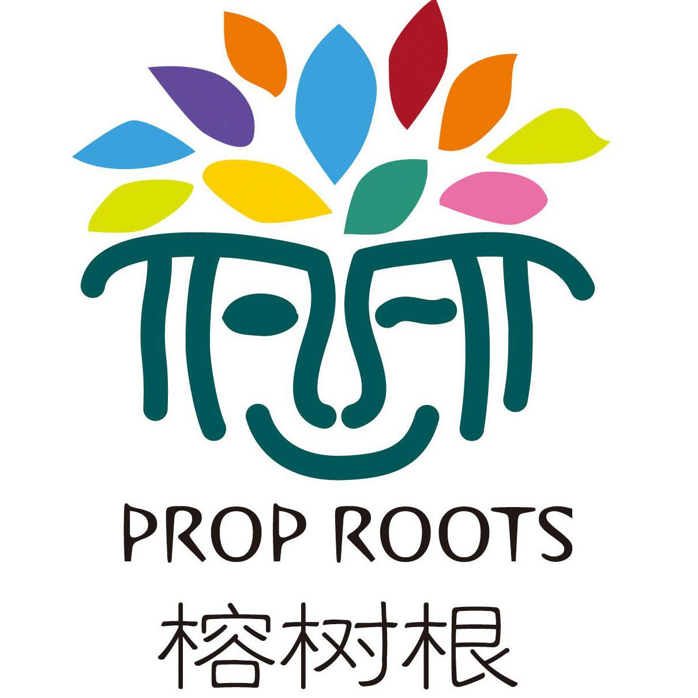

Humanities Teacher and Project Director at Tsinghua International School
At Tsinghua International School I taught humanities and AP US history. I was the lead on the Ethnography Project, a collaboration with a nonprofit, Prop Roots, operating in China's Yunnan province on the border with Myanmar. The first year, the project had to be altered at the last minute due to the COVID-19 pandemic. We were unable to travel to Yunnan, so we had to adapt the project to something we could do in Beijing. We searched for numerous potential locations that could handle 60+ students. In the end we made it into a project about the culture of the shopping mall, looking at how China had changed in the students lifetime. Despite the changes it was a major success. In the second year, we were able to travel to Yunnan and work with Prop Roots directly. We spent a week in the field, interviewing and working with the local community. The students learned about the local culture and history, while also contributing to the nonprofit's efforts in the region. It was a lifetime experience for the students, and a major test of my project-management skills. Another major accomplishment was my work as co-chair of the Homeroom Committee. My co-chair and I worked to develop a new system for managing homeroom activities and communication between teachers and students. This included creating a new schedule for homeroom activities, developing a system for tracking student progress, and implementing a new communication platform for teachers and students. We trained teachers on the new system and ensured that it was implemented effectively. It been a major success, leading to improved communication and collaboration between teachers and students. Additionally, I was a major part of THIS' participation in the annual National History Day. I implemented the learning system NoodleTools for students to use in their research and project development. This system allowed students to organize their research, create outlines, and develop their projects in a more structured way. It also provided a platform for students to collaborate and share their work with each other. The department was very data-driven, and I was able to use my skills in data analysis to help the department make informed decisions about curriculum and instruction, focusing on standardizing rubrics and improving reading. I analyzed student performance data to identify trends and patterns, as well as conducting surveys to gather feedback from students and teachers.
- Teaching humanities and APUSH
- Homeroom teacher and Co-chair Homeroom committee
- Trained in Circles
- Project management for Ethnography project
- Collaboration with Prop Roots nonprofit in Yunnan
- Work with Shangpin mall staff for Ethnography project
- Cross departmental cooperation with English and Chinese Department organizing curiculum and fieldtrips
- Data analysis for curriculum and instruction
- Developing rubrics based on Understanding by Design
- National History Day organizer and Noodletools implementer
- Presented AP Capstone curiculum to staff
My experience at Tsinghua International School has been invaluable in my professional development. I learned how to manage complex projects, collaborate with diverse teams, and use data to inform decision-making. I also gained a deeper understanding of the challenges and opportunities facing education in international schools.